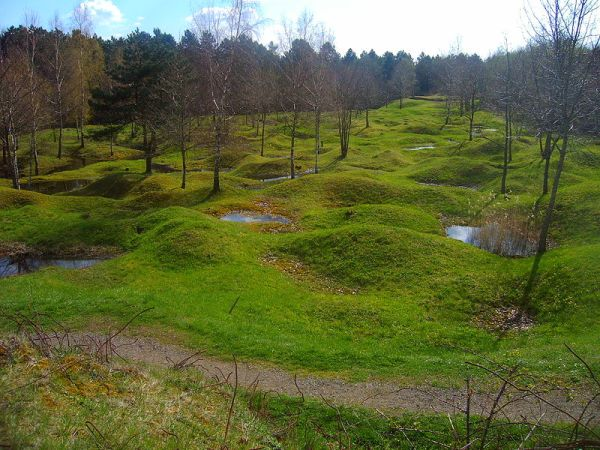
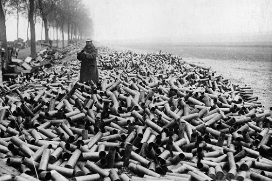

IF YOU CAN SEE THIS TEXT, YOU NEED TO ENABLE JAVASCRIPT FOR MANY FUNCTIONS OF THIS SITE
 The second bloodiest battle of World War I would start with bang. On the early morning of February 21, 1916, the Germans would launch an artillery bombardment that was 25 miles long. Later that day the Germans would push forward penetrating the French line, gaining ground, and able to continue with momentum. By the 24th, the first French line was gone and the French general was replaced due to the massive loss so far. The new French general was given the command to hold the line against the German offensive. On February 26, over 500,000 German troops would assault their hold, but the French would withstand their attack. The Germans failed their initial plans to take over Verdun, and now faced another massive battle against the British on the Somme.
The Germans had an upper hand in this month long stalemate, but they were growing weary and had less soldiers due to German forces being moved to the Somme. By July the tides would start to turn in favor of the French. The French were able to retake land, and by September most of the fighting was done. On December 15th, the French would attack Poivre Hill, and due to a delayed German counter attack, the French were able to claim victory and took over 10,000 Germans as prisoners. The battle of Verdun would finally be done three days later, coming in for a total length of 9 months, 3 weeks and 6 days. Over 305,000 men were killed, with another 400,000 injured or missing. The land around Verdun today is still uninhabited due to total destruction that occurred at this battle. The French called this area of land Zone Rogue, where various unexploded weapons were still in the ground which prevented resettlement of the area. 10 towns were completely destroyed. Over 10 million shells remain in the grounds of Verdun, leaving a scar forever ever in France.